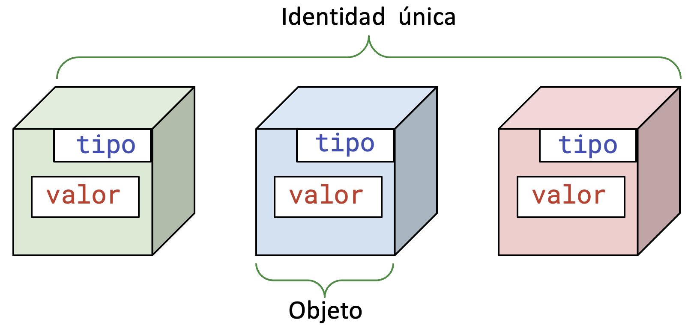
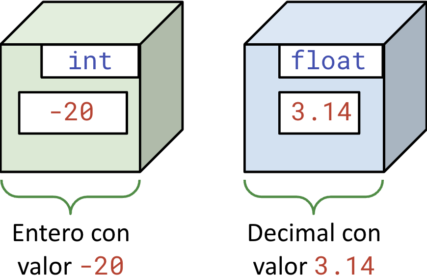

<!DOCTYPE html>
<html lang="en">
  <head>
    <meta charset="utf-8" />
    <meta name="viewport" content="width=device-width, initial-scale=1.0, maximum-scale=1.0, user-scalable=no" />

    <title></title>
    <link rel="stylesheet" href="dist/reveal.css" />
    <link rel="stylesheet" href="dist/theme/iph.css" id="theme" />
    <link rel="stylesheet" href="plugin/highlight/spyder.css" />
	<link rel="stylesheet" href="css/layout.css" />
	<link rel="stylesheet" href="plugin/customcontrols/style.css">


    <script defer src="dist/fontawesome/all.min.js"></script>

	<script type="text/javascript">
		var forgetPop = true;
		function onPopState(event) {
			if(forgetPop){
				forgetPop = false;
			} else {
				parent.postMessage(event.target.location.href, "app://obsidian.md");
			}
        }
		window.onpopstate = onPopState;
		window.onmessage = event => {
			if(event.data == "reload"){
				window.document.location.reload();
			}
			forgetPop = true;
		}

		function fitElements(){
			const itemsToFit = document.getElementsByClassName('fitText');
			for (const item in itemsToFit) {
				if (Object.hasOwnProperty.call(itemsToFit, item)) {
					var element = itemsToFit[item];
					fitElement(element,1, 1000);
					element.classList.remove('fitText');
				}
			}
		}

		function fitElement(element, start, end){

			let size = (end + start) / 2;
			element.style.fontSize = `${size}px`;

			if(Math.abs(start - end) < 1){
				while(element.scrollHeight > element.offsetHeight){
					size--;
					element.style.fontSize = `${size}px`;
				}
				return;
			}

			if(element.scrollHeight > element.offsetHeight){
				fitElement(element, start, size);
			} else {
				fitElement(element, size, end);
			}		
		}


		document.onreadystatechange = () => {
			fitElements();
			if (document.readyState === 'complete') {
				if (window.location.href.indexOf("?export") != -1){
					parent.postMessage(event.target.location.href, "app://obsidian.md");
				}
				if (window.location.href.indexOf("print-pdf") != -1){
					let stateCheck = setInterval(() => {
						clearInterval(stateCheck);
						window.print();
					}, 250);
				}
			}
	};


        </script>
  </head>
  <body>
    <div class="reveal">
      <div class="slides"><section  data-markdown><script type="text/template"><!-- .slide: class="has-light-background drop" data-background-color="#f8f8f8" -->
<div class="" style="position: absolute; left: 0px; top: 0px; height: 700px; width: 960px; min-height: 700px; display: flex; flex-direction: column; align-items: center; justify-content: center" absolute="true">

### <i class="fas fa-award"></i> IP Honores

 ####  *Tipos de datos numéricos y sus operaciones básicas*

[Eduardo Rosales](mailto:ee.rosales24@uniandes.edu.co)

Departamento de Ingeniería de Sistemas y Computación

Universidad de los Andes
</div></script></section><section  data-markdown><script type="text/template"><!-- .slide: class="has-light-background drop" data-background-color="#f8f8f8" -->
<div class="" style="position: absolute; left: 0px; top: 0px; height: 700px; width: 960px; min-height: 700px; display: flex; flex-direction: column; align-items: center; justify-content: center" absolute="true">

###  Objeto (1/3)

- No es el objetivo del curso estudiar a fondo los objetos
- Basta con saber que
	- En Python, *todo se trata como un objeto*
</div></script></section><section  data-markdown><script type="text/template"><!-- .slide: class="has-light-background drop" data-background-color="#f8f8f8" -->
<div class="" style="position: absolute; left: 0px; top: 0px; height: 700px; width: 960px; min-height: 700px; display: flex; flex-direction: column; align-items: center; justify-content: center" absolute="true">

###  Objeto (2/3)

- Un objeto en Python tiene asociado
	- Tipo
	- Valor
	- Identidad (la estudiaremos después)

<br>


</div></script></section><section  data-markdown><script type="text/template"><!-- .slide: class="has-light-background drop" data-background-color="#f8f8f8" -->
<div class="" style="position: absolute; left: 0px; top: 0px; height: 700px; width: 960px; min-height: 700px; display: flex; flex-direction: column; align-items: center; justify-content: center" absolute="true">

###  Objeto (3/3)

- Ejemplos conceptuales de objetos en Python:


</div></script></section><section  data-markdown><script type="text/template"><!-- .slide: class="has-light-background drop" data-background-color="#f8f8f8" -->
<div class="" style="position: absolute; left: 0px; top: 0px; height: 700px; width: 960px; min-height: 700px; display: flex; flex-direction: column; align-items: center; justify-content: center" absolute="true">

### Valor

- Una representación de datos en Python
- Ej: `-20`, `3.14`
</div></script></section><section  data-markdown><script type="text/template"><!-- .slide: class="has-light-background drop" data-background-color="#f8f8f8" -->
<div class="" style="position: absolute; left: 0px; top: 0px; height: 700px; width: 960px; min-height: 700px; display: flex; flex-direction: column; align-items: center; justify-content: center" absolute="true">

###  Tipo de dato (1/2)


<br>

- ¿`int`? 
- ¿`float`?
</div></script></section><section  data-markdown><script type="text/template"><!-- .slide: class="has-light-background drop" data-background-color="#f8f8f8" -->
<div class="" style="position: absolute; left: 0px; top: 0px; height: 700px; width: 960px; min-height: 700px; display: flex; flex-direction: column; align-items: center; justify-content: center" absolute="true">

### Tipo de dato (2/2)

- En Nivel 1 se estudian dos tipos de datos numéricos:
<table border="1" style="border-collapse: collapse; width: 100%; text-align: center; font-size: 20px;">
  <thead style="background-color: #d0e6f8">
    <tr>
      <th style="color: black;">Nombre</th>
      <th style="color: black;">Tipo</th>
      <th style="color: black;">Ejemplos</th>
    </tr>
  </thead>
  <tbody>
    <tr>
      <td>Entero</td>
      <td><code>int</code></td>
      <td><code>0</code>, <code>1</code>, <code>-2</code>, <code>1_000</code></td>
    </tr>
    <tr>
      <td>Decimal</td>
      <td><code>float</code></td>
      <td><code>.0</code>, <code>3.14</code>, <code>3.14e-10</code></td>
    </tr>
  </tbody>
</table>
</div></script></section><section  data-markdown><script type="text/template"><!-- .slide: class="has-light-background drop" data-background-color="#f8f8f8" -->
<div class="" style="position: absolute; left: 0px; top: 0px; height: 700px; width: 960px; min-height: 700px; display: flex; flex-direction: column; align-items: center; justify-content: center" absolute="true">

### Entero - `int`

- Representa un número entero
	- Positivo o negativo
- Se permiten usar guión bajo `_` para mejor legibilidad
	- ✅ `10000` o `10_000`
	- ❌ 10.000, 10,000, 10 000
</div></script></section><section  data-markdown><script type="text/template"><!-- .slide: class="has-light-background drop" data-background-color="#f8f8f8" -->
<div class="" style="position: absolute; left: 0px; top: 0px; height: 700px; width: 960px; min-height: 700px; display: flex; flex-direction: column; align-items: center; justify-content: center" absolute="true">

### Decimal/flotante - `float`

- Representa un número real con puntos decimales
	- Positivo o negativo
	
<br>

- Notación científica
	- Forma concisa de escribir valores grandes o pequeños
	- `e`  ó  `E` denotan potencia de 10
		- Ej: `1.2e9` (ó `1.2E9`) representa 1.2 x 10<sup>9</sup>
</div></script></section><section  data-markdown><script type="text/template"><!-- .slide: class="has-light-background drop" data-background-color="#f8f8f8" -->
<div class="" style="position: absolute; left: 0px; top: 0px; height: 700px; width: 960px; min-height: 700px; display: flex; flex-direction: column; align-items: center; justify-content: center" absolute="true">

### Estudiemos las operaciones básicas de los tipos de datos numéricos
</div></script></section><section  data-markdown><script type="text/template"><!-- .slide: class="has-light-background drop" data-background-color="#f8f8f8" -->
<div class="" style="position: absolute; left: 0px; top: 0px; height: 700px; width: 960px; min-height: 700px; display: flex; flex-direction: column; align-items: center; justify-content: center" absolute="true">

### Tipos de operadores

- Operadores unarios:
	- Actúan sobre **un** operando
	-   Ej: Operador de cambio de signo: `-`
		
```Python
-1  # → -1
```

<br>

- Operadores binarios:
	- Actúan sobre **dos** operandos
	-   Ej: Operador de sustracción:  `-`
		
```Python
4 - 2  # → 2
```
</div></script></section><section  data-markdown><script type="text/template"><!-- .slide: class="has-light-background drop" data-background-color="#f8f8f8" -->
<div class="" style="position: absolute; left: 0px; top: 0px; height: 700px; width: 960px; min-height: 700px; display: flex; flex-direction: column; align-items: center; justify-content: center" absolute="true">

### Operadores Unarios
<table border="1" style="border-collapse: collapse; width: 100%; text-align: center;font-size: 20px;">
  <thead style="background-color: #d0e6f8;">
    <tr>
      <th style="color: black;">Operador</th>
      <th style="color: black;">Descripción</th>
      <th style="color: black;">Ejemplo</th>
      <th style="color: black;">Resultado</th>
    </tr>
  </thead>
  <tbody>
    <tr>
      <td>−</td>
      <td style="text-align: left;">Cambio de signo:<br>Invierte el signo</td>
      <td>−2</td>
      <td>−2</td>
    </tr>
    <tr>
      <td>+</td>
      <td style="text-align: left;">Identidad:<br>No tiene efecto<br>(solo hace explícito el signo)</td>
      <td>+5</td>
      <td>5</td>
    </tr>
  </tbody>
</table>
</div></script></section><section  data-markdown><script type="text/template"><!-- .slide: class="has-light-background drop" data-background-color="#f8f8f8" -->
<div class="" style="position: absolute; left: 0px; top: 0px; height: 700px; width: 960px; min-height: 700px; display: flex; flex-direction: column; align-items: center; justify-content: center" absolute="true">

### Operadores Aritméticos
<table border="1" style="border-collapse: collapse; width: 100%; text-align: center;font-size: 20px;">
  <thead style="background-color: #d0e6f8;">
    <tr>
      <th style="color: black;">Operador</th>
      <th style="color: black;">Descripción</th>
      <th style="color: black;">Ejemplo</th>
      <th style="color: black;">Resultado</th>
    </tr>
  </thead>
  <tbody>
    <tr>
      <td>+</td>
      <td>Suma</td>
      <td>5 + 5</td>
      <td>10</td>
    </tr>
    <tr>
      <td>−</td>
      <td>Resta</td>
      <td>10 - 2</td>
      <td>8</td>
    </tr>
    <tr>
      <td>*</td>
      <td>Multiplicación</td>
      <td>7 * 3</td>
      <td>21</td>
    </tr>
    <tr>
      <td>/</td>
      <td>División</td>
      <td>9 / 2</td>
      <td>4.5</td>
    </tr>
    <tr>
      <td>//</td>
      <td>División (entera)</td>
      <td>9 // 2</td>
      <td>4</td>
    </tr>
    <tr>
      <td>%</td>
      <td>Módulo  (o resto)</td>
      <td>9 % 2</td>
      <td>1</td>
    </tr>
    <tr>
      <td>**</td>
      <td>Exponenciación</td>
      <td>2 ** 4</td>
      <td>16</td>
    </tr>
  </tbody>
</table>
</div></script></section><section  data-markdown><script type="text/template"><!-- .slide: class="has-light-background drop" data-background-color="#f8f8f8" -->
<div class="" style="position: absolute; left: 0px; top: 0px; height: 700px; width: 960px; min-height: 700px; display: flex; flex-direction: column; align-items: center; justify-content: center" absolute="true">

### ¿Qué prioridad de ejecución tienen los operadores en Python?
</div></script></section><section  data-markdown><script type="text/template"><!-- .slide: class="has-light-background drop" data-background-color="#f8f8f8" -->
<div class="" style="position: absolute; left: 0px; top: 0px; height: 700px; width: 960px; min-height: 700px; display: flex; flex-direction: column; align-items: center; justify-content: center" absolute="true">

### Precedencia (prioridad) de operadores

- Define el orden de evaluación de los operadores 
	- Los operadores de mayor prioridad 
		- Se evalúan primero 

<table border="1" style="border-collapse: collapse; width: 100%; text-align: center; font-size: 20px;">
  <thead style="background-color: #d0e6f8;">
    <tr>
      <th style="color: black;">Prioridad</th>
      <th style="color: black;">Operador</th>
      <th style="color: black;">Tipo</th>
    </tr>
  </thead>
  <tbody>
    <tr>
      <td>1</td>
      <td><code>**</code></td>
      <td>Binario</td>
    </tr>
    <tr>
      <td>2</td>
      <td><code>+, −</code></td>
      <td>Unario</td>
    </tr>
    <tr>
      <td>3</td>
      <td><code>*, /, //, %</code></td>
      <td>Binario</td>
    </tr>
    <tr>
      <td>4</td>
      <td><code>+, -</code></td>
      <td>Binario</td>
    </tr>
  </tbody>
</table>
</div></script></section><section  data-markdown><script type="text/template"><!-- .slide: class="has-light-background drop" data-background-color="#f8f8f8" -->
<div class="" style="position: absolute; left: 0px; top: 0px; height: 700px; width: 960px; min-height: 700px; display: flex; flex-direction: column; align-items: center; justify-content: center" absolute="true">

### ¿En qué orden se ejecutan operadores de igual prioridad en Python?
</div></script></section><section  data-markdown><script type="text/template"><!-- .slide: class="has-light-background drop" data-background-color="#f8f8f8" -->
<div class="" style="position: absolute; left: 0px; top: 0px; height: 700px; width: 960px; min-height: 700px; display: flex; flex-direction: column; align-items: center; justify-content: center" absolute="true">

### Asociatividad

- Define la dirección de evaluación de operadores de igual precedencia
	- La mayoría de los operadores 
		- Tienen asociatividad de _izquierda a derecha_
			- Excepto la exponenciación
</div></script></section><section  data-markdown><script type="text/template"><!-- .slide: class="has-light-background drop" data-background-color="#f8f8f8" -->
<div class="" style="position: absolute; left: 0px; top: 0px; height: 700px; width: 960px; min-height: 700px; display: flex; flex-direction: column; align-items: center; justify-content: center" absolute="true">

### Asociatividad por el lado izquierdo (1/2)

- ¿Cuál es el resultado de ejecutar el siguiente código?

```Python
9 % 6 % 2
```
</div></script></section><section  data-markdown><script type="text/template"><!-- .slide: class="has-light-background drop" data-background-color="#f8f8f8" -->
<div class="" style="position: absolute; left: 0px; top: 0px; height: 700px; width: 960px; min-height: 700px; display: flex; flex-direction: column; align-items: center; justify-content: center" absolute="true">

### Asociatividad por el lado izquierdo (2/2)

- ¿Cuál es el resultado de ejecutar el siguiente código?

```Python
9 % 6 % 2
```

<br>

- De **izquierda a derecha**:

```Python
9 % 6 = 3
3 % 2 = 1
```
</div></script></section><section  data-markdown><script type="text/template"><!-- .slide: class="has-light-background drop" data-background-color="#f8f8f8" -->
<div class="" style="position: absolute; left: 0px; top: 0px; height: 700px; width: 960px; min-height: 700px; display: flex; flex-direction: column; align-items: center; justify-content: center" absolute="true">

### La exponenciación es la única con asociatividad de derecha a izquierda
</div></script></section><section  data-markdown><script type="text/template"><!-- .slide: class="has-light-background drop" data-background-color="#f8f8f8" -->
<div class="" style="position: absolute; left: 0px; top: 0px; height: 700px; width: 960px; min-height: 700px; display: flex; flex-direction: column; align-items: center; justify-content: center" absolute="true">

### Asociatividad por el lado derecho (1/2)

- Ejemplo de asociatividad por el lado derecho

- ¿Cuál es el resultado de ejecutar el siguiente código?

```Python
2 ** 2 ** 3
```
</div></script></section><section  data-markdown><script type="text/template"><!-- .slide: class="has-light-background drop" data-background-color="#f8f8f8" -->
<div class="" style="position: absolute; left: 0px; top: 0px; height: 700px; width: 960px; min-height: 700px; display: flex; flex-direction: column; align-items: center; justify-content: center" absolute="true">

### Asociatividad por el lado derecho (2/2)

- ¿Cuál es el resultado de ejecutar el siguiente código?

```Python
2 ** 2 ** 3
```

<br>

- De **derecha a izquierda**:
	
```Python
2 ** 3 = 8
2 ** 8 = 256
```
</div></script></section><section  data-markdown><script type="text/template"><!-- .slide: class="has-light-background drop" data-background-color="#f8f8f8" -->
<div class="" style="position: absolute; left: 0px; top: 0px; height: 700px; width: 960px; min-height: 700px; display: flex; flex-direction: column; align-items: center; justify-content: center" absolute="true">

### ¿Se puede alterar el orden de ejecución de los operadores en Python?
</div></script></section><section  data-markdown><script type="text/template"><!-- .slide: class="has-light-background drop" data-background-color="#f8f8f8" -->
<div class="" style="position: absolute; left: 0px; top: 0px; height: 700px; width: 960px; min-height: 700px; display: flex; flex-direction: column; align-items: center; justify-content: center" absolute="true">

### Paréntesis

- Pueden alterar la prioridad predeterminada
	- Operaciones entre paréntesis 
		- Se calculan primero
- Mejor legibilidad del código
</div></script></section><section  data-markdown><script type="text/template"><!-- .slide: class="has-light-background drop" data-background-color="#f8f8f8" -->
<div class="" style="position: absolute; left: 0px; top: 0px; height: 700px; width: 960px; min-height: 700px; display: flex; flex-direction: column; align-items: center; justify-content: center" absolute="true">

### Paréntesis - Ejemplos

<br>

-   **Sin** paréntesis:

```Python
5 + 3 * 2 ** 2  # → 17 
# Orden: Exponenciación, multiplicación, adición
```

<br>

-   Con paréntesis para **aclarar el orden**:

```Python
5 + (3 * (2 ** 2))  # → 17
# Mejor legibilidad
````

<br>

-   Con paréntesis para **alterar el orden**:

```Python
(5 + 3) * 2 ** 2  # → 32 
# Orden alterado: Adición evaluada primero
```
</div></script></section><section  data-markdown><script type="text/template"><!-- .slide: class="has-light-background drop" data-background-color="#f8f8f8" -->
<div class="" style="position: absolute; left: 0px; top: 0px; height: 700px; width: 960px; min-height: 700px; display: flex; flex-direction: column; align-items: center; justify-content: center" absolute="true">

### Expresión

- Sintaxis evaluable que produce un valor
-   Se compone de 
	- Un elemento único
	- Ó una combinación de 
		- Valores
		- Operadores, etc.
-   Ej:

```Python
2  # → 2 (un valor)

100 - 30 / (7 - 6)  # → 70.0 (valores y operadores)
```
</div></script></section><section  data-markdown><script type="text/template"><!-- .slide: class="has-light-background drop" data-background-color="#f8f8f8" -->
<div class="" style="position: absolute; left: 0px; top: 0px; height: 700px; width: 960px; min-height: 700px; display: flex; flex-direction: column; align-items: center; justify-content: center" absolute="true">

### Precedencia de operadores (actualizada)

<table border="1" style="border-collapse: collapse; width: 100%; text-align: center; font-size: 20px;">
  <thead style="background-color: #d0e6f8;">
    <tr>
      <th style="color: black;">Prioridad</th>
      <th style="color: black;">Operador</th>
      <th style="color: black;">Tipo</th>
    </tr>
  </thead>
  <tbody>
    <tr>
      <td></td>
      <td><code><strong>(expresión)<strong></code></td>
      <td><strong>Expresión entre paréntesis<strong></td>
    </tr>
    <tr>
      <td>1</td>
      <td><code>**</code></td>
      <td>Binario</td>
    </tr>
    <tr>
      <td>2</td>
      <td><code>+, −</code></td>
      <td>Unario</td>
    </tr>
    <tr>
      <td>3</td>
      <td><code>*, /, //, %</code></td>
      <td>Binario</td>
    </tr>
    <tr>
      <td>4</td>
      <td><code>+, -</code></td>
      <td>Binario</td>
    </tr>
  </tbody>
</table>
</div></script></section><section  data-markdown><script type="text/template"><!-- .slide: class="has-light-background drop" data-background-color="#f8f8f8" -->
<div class="" style="position: absolute; left: 0px; top: 0px; height: 700px; width: 960px; min-height: 700px; display: flex; flex-direction: column; align-items: center; justify-content: center" absolute="true">

<i class="fas fa-question-circle fa-2x fa-spin fa-4x"></i>

<br>
<br>

 [<i class="fas fa-home  fa-3x"></i>](https://eerosales24.github.io/iph_2025_10/#)
</div></script></section></div>
    </div>

    <script src="dist/reveal.js"></script>

    <script src="plugin/markdown/markdown.js"></script>
    <script src="plugin/highlight/highlight.js"></script>
    <script src="plugin/zoom/zoom.js"></script>
    <script src="plugin/notes/notes.js"></script>
    <script src="plugin/math/math.js"></script>
	<script src="plugin/mermaid/mermaid.js"></script>
	<script src="plugin/chart/chart.min.js"></script>
	<script src="plugin/chart/plugin.js"></script>
	<script src="plugin/customcontrols/plugin.js"></script>

    <script>
      function extend() {
        var target = {};
        for (var i = 0; i < arguments.length; i++) {
          var source = arguments[i];
          for (var key in source) {
            if (source.hasOwnProperty(key)) {
              target[key] = source[key];
            }
          }
        }
        return target;
      }

	  function isLight(color) {
		let hex = color.replace('#', '');

		// convert #fff => #ffffff
		if(hex.length == 3){
			hex = `${hex[0]}${hex[0]}${hex[1]}${hex[1]}${hex[2]}${hex[2]}`;
		}

		const c_r = parseInt(hex.substr(0, 2), 16);
		const c_g = parseInt(hex.substr(2, 2), 16);
		const c_b = parseInt(hex.substr(4, 2), 16);
		const brightness = ((c_r * 299) + (c_g * 587) + (c_b * 114)) / 1000;
		return brightness > 155;
	}

	var bgColor = getComputedStyle(document.documentElement).getPropertyValue('--r-background-color').trim();
	var isLight = isLight(bgColor);

	if(isLight){
		document.body.classList.add('has-light-background');
	} else {
		document.body.classList.add('has-dark-background');
	}

      // default options to init reveal.js
      var defaultOptions = {
        controls: true,
        progress: true,
        history: true,
        center: true,
        transition: 'default', // none/fade/slide/convex/concave/zoom
        plugins: [
          RevealMarkdown,
          RevealHighlight,
          RevealZoom,
          RevealNotes,
          RevealMath.MathJax3,
		  RevealMermaid,
		  RevealChart,
		  RevealCustomControls,
        ],


    	allottedTime: 120 * 1000,

		mathjax3: {
			mathjax: 'plugin/math/mathjax/tex-mml-chtml.js',
		},
		markdown: {
		  gfm: true,
		  mangle: true,
		  pedantic: false,
		  smartLists: false,
		  smartypants: false,
		},

		mermaid: {
			theme: isLight ? 'default' : 'dark',
		},

		customcontrols: {
			controls: [
			]
		},
      };

      // options from URL query string
      var queryOptions = Reveal().getQueryHash() || {};

      var options = extend(defaultOptions, {"width":960,"height":700,"margin":"0.025","minScale":"0.1","maxScale":"2.0","controls":"true","controlsLayout":"bottom-right","progress":"true","slideNumber":"true","center":"false","transition":"slide","transitionSpeed":"default"}, queryOptions);
    </script>

    <script>
      Reveal.initialize(options);
    </script>
  </body>

  <!-- created with Advanced Slides -->
</html>
